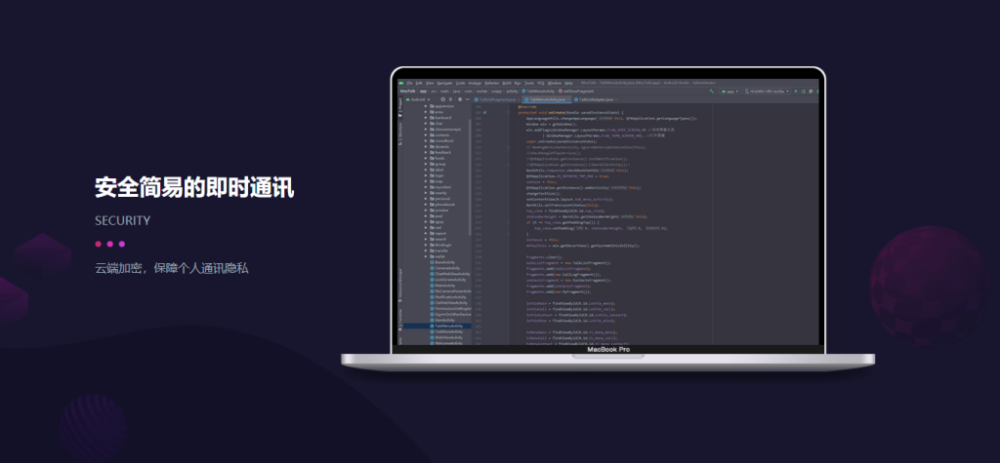

丝瓜聊天账户如何二次验证？
要为丝瓜聊天账户启用二次验证，首先进入应用的“设置”页面，找到“安全”选项，选择“二次验证”或“启用双重认证”。系统会要求绑定手机号码或电子邮件，并通过短信或邮件发送验证码。输入验证码后，二次验证设置完成。此后，每次登录时，除了密码外，还需要输入通过短信或邮件收到的验证码，以增强账户安全性。

丝瓜聊天账户如何二次验证
如何启用二次验证功能
-
进入安全设置：首先，打开丝瓜聊天应用，点击右上角的设置图标，进入设置页面。在设置页面中找到“安全”选项，点击进入后，选择“二次验证”设置。
-
选择验证方式：在二次验证设置页面，用户可以选择绑定手机号码或电子邮件进行验证。用户需要输入有效的手机号码或电子邮件地址，并点击“获取验证码”按钮。
-
输入验证码并启用：选择了验证方式后，系统会向用户提供的手机号码或电子邮件发送验证码。输入验证码后，确认无误，二次验证功能即可成功启用，增强账户的安全性。
二次验证开启后的登录步骤
-
输入账号和密码：每次登录丝瓜聊天时，用户需要首先输入自己的账号和密码。这是登录过程的基本步骤，确保用户身份的验证。
-
接收并输入验证码：在输入完密码后，系统会通过用户绑定的手机号码或电子邮件发送一次性验证码。用户需在登录页面中输入该验证码。
-
完成二次验证并进入应用：当用户正确输入验证码后，系统将验证该验证码的有效性。一旦验证通过，用户便可以成功登录丝瓜聊天，享受更高安全性的账户保护。每次登录时，二次验证为账户增加额外的保护层，防止未授权的访问。
丝瓜聊天账户安全设置
如何设置强密码保护账户
-
选择复杂的密码：为了确保丝瓜聊天账户的安全，设置密码时应包含大写字母、小写字母、数字以及特殊字符。密码越复杂，破解的难度越大，从而有效防止他人猜测或暴力破解。避免使用简单的密码，如“123456”或与个人信息相关的内容。
-
避免使用常见密码：不要使用“password”或其他常见密码作为丝瓜聊天账户的密码。系统会提示用户避免使用容易被猜到的密码。建议使用随机生成的密码或密码管理器来生成和存储复杂密码。
-
定期更换密码：即使设置了强密码，定期更换密码仍然是保护丝瓜聊天账户的良好习惯。建议每隔几个月修改一次密码，尤其是当账户出现安全风险时。定期更换密码可以防止他人长期访问账户。
启用二次验证后的额外安全保障
-
二次验证加强账户安全：启用丝瓜聊天的二次验证后，每次登录丝瓜聊天时，除了输入密码外，用户还需要输入通过手机或电子邮件接收到的验证码。此措施大大提升了账户的安全性，即使密码被泄露，未授权的用户也无法登录账户。
-
增加防止盗号的层级：即使丝瓜聊天账户的密码被破解，二次验证仍能有效防止黑客访问账户。通过验证码验证，系统确保只有经过授权的用户才能登录，防止了密码泄露的风险。
-
确保设备安全性：启用丝瓜聊天的二次验证时，确保你的手机或邮箱账户的安全性。使用强密码保护手机和邮箱，避免这些信息被他人获取。结合二次验证，可以有效提升账户的整体安全水平，防止账户被盗用。

丝瓜聊天二次验证的验证方式
使用手机号码进行验证
-
绑定手机号码：在启用丝瓜聊天二次验证时，用户需要首先绑定自己的手机号码。在设置二次验证时，系统会要求输入手机号码，确保该号码是用户能够访问的有效手机号。绑定后，丝瓜聊天会将重要的验证信息发送到该手机号码。
-
接收验证码：每当用户尝试登录丝瓜聊天账户时，系统会发送一次性验证码到绑定的手机号码。用户需要在登录页面输入验证码，以完成登录过程。验证码通常会有时间限制，确保账户安全。
-
验证码有效性：手机号码验证的最大优势是验证码的及时性和便捷性。通过手机号码验证，用户能够在最短时间内收到验证码，从而快速完成身份验证，防止他人未经授权登录账户。
使用电子邮件进行验证
-
绑定电子邮件地址：与手机号码验证类似，丝瓜聊天也允许用户通过电子邮件来进行二次验证。用户需要在设置中绑定自己的电子邮件地址，并通过电子邮件来接收验证码。
-
接收并输入验证码：每次登录丝瓜聊天时，系统会向绑定的电子邮件地址发送一个验证码，用户需要输入该验证码以完成登录。与手机验证相比，电子邮件验证需要稍长的时间来接收验证码，但同样可以提供安全保障。
-
电子邮件验证的优势：电子邮件验证除了常见的密码和验证码，还能通过邮箱地址增加一层身份识别。尤其是对于那些不常使用手机的用户，电子邮件验证是一种方便且有效的安全手段。

丝瓜聊天二次验证的作用
提高账户安全性
-
增加验证层次：启用丝瓜聊天的二次验证后，用户不仅需要输入密码，还需要通过手机或电子邮件接收到的验证码完成验证。这一额外的验证层次极大增强了账户的安全性，即使密码泄露，未经授权的人员也无法轻易登录账户。
-
防止密码被破解：即使密码被黑客或恶意软件破解，二次验证依然可以有效防止账户被非法访问。通过要求输入动态验证码，丝瓜聊天确保只有绑定的手机或邮箱的用户能够访问账户，提供了一种有效的防护措施。
-
提高账户隐私保护：二次验证可以大大提升丝瓜聊天账户的隐私保护级别，防止用户数据遭到盗用。对于需要保护个人聊天记录或敏感信息的用户来说，二次验证是确保数据安全的重要手段。
防止未经授权的登录
-
防止账号被盗用：二次验证的最大作用之一是防止未经授权的用户登录。即使攻击者通过社交工程或其他手段获得了用户的密码，缺乏有效的验证码，他们依然无法访问账户。二次验证使得账户的访问不仅仅依赖密码，增加了一个额外的安全壁垒。
-
阻止暴力破解攻击：密码暴力破解是常见的安全威胁之一，但启用了二次验证后，即便攻击者通过自动化工具猜测出密码，也无法成功登录。只有通过正确的验证码，才能最终获得访问权限，极大降低了暴力破解的成功几率。
-
确保账号真正所有者的访问：二次验证确保每次登录操作都能确认账户所有者身份，即使是从不常用的设备或新的网络环境进行登录时，验证机制依然可以有效识别合法用户，防止不明身份的访问。

丝瓜聊天的安全设置最佳实践
如何定期更换密码
-
设置密码更换周期：为了保持丝瓜聊天账户的安全，建议用户每三到六个月更换一次密码。定期更换密码可以防止因密码泄露或被猜测而导致账户被盗。密码更换周期应根据个人使用情况和安全要求来设定。
-
选择复杂密码：更换密码时，确保密码具有足够的复杂性。使用包含大写字母、小写字母、数字和特殊字符的密码，并避免使用易于猜测的个人信息（如生日、电话号码）。复杂的密码增加了黑客破解的难度，有效保护账户安全。
-
避免重复使用密码：尽量避免在多个网站和应用中使用相同的密码。每个账户都应使用唯一的密码，以防止某一个平台的泄露影响到其他账户的安全。可以使用密码管理器来帮助管理和存储不同账户的密码。
设置安全问题与二次验证配合使用
-
设置安全问题：在丝瓜聊天的账户设置中，除了使用密码和二次验证外，用户还可以设置安全问题作为额外的身份验证方式。选择一些不容易被猜测的问题，如“你母亲的名字是什么？”或“你第一次的宠物名字？”等，确保问题和答案的唯一性。
-
二次验证与安全问题的结合：启用二次验证后，每次登录时，不仅需要输入密码和验证码，还可以要求回答安全问题，以进一步提高账户的安全性。安全问题作为额外的防护措施，可以帮助防止密码被盗或账户被非法访问。
-
定期更新安全问题的答案：为了增强账户安全性，建议用户定期更新安全问题的答案。更新安全问题及其答案有助于防止黑客通过获取公共信息或社交工程技巧破解账户的安全问题。